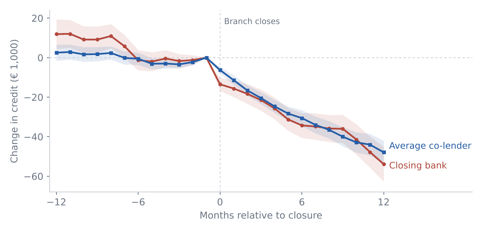

Job market paper
Beyond the Closing Bank: The Indirect Effect of Branch Closures on Firms
When a bank closes its local branch, what happens to the firm’s other lenders? Using Italian credit-register data (AnaCredit) matched to the branch register, we follow about 18,000 cases in which a firm’s local bank closes its branch and decompose their lost credit by lender. The closing bank accounts for only about a third of the decline. The firm’s other incumbent lenders, banks that closed nothing, also cut credit and account for roughly 70% of the total. Rather than substituting for the departing local bank, co-lenders act as complements. We document two channels. In an information channel, co-lenders’ default forecasts for affected firms become less accurate, and they cut more when they can observe the closing bank’s actions through the credit register. In a firm channel, affected firms become riskier, and co-lenders cut more when the firm depended more on the closing bank. The cost of losing a local bank thus spreads through the firm’s whole lending network.
